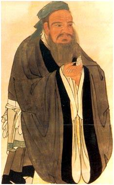

오래전에 우스개 글로 '프로그래밍의 도(道)' 라는 글을 본 적이 있다.
이 글은 공자의 '논어'와 비슷한 형식으로 스승과 제자의 문답을 다루고 있었다.
그 내용은 다소 소프트웨어 공학적인 요소가 반영되어 있었는데 바로 다음과 같은 부분이다.
여기서 '도사 프로그래머' 란 'Master Programmer' 를 의역한 것이다.
『관리자가 도사 프로그래머를 만나 새 애플리케이션의 요구사항을 담은 문서를 건네주었다. 관리자가 묻기를: "다섯명의 프로그래머를 투입한다면 시스템을 설계하는데 얼마나 걸리겠소?"
"일년이 걸릴 것이오." 도사가 간단하게 대답하였다.
"하지만 우리는 이 시스템이 지금 당장 필요하단 말이요! 프로그래머를 열명 투입하면 어떻겠소?"
도사는 인상을 지푸렸다. "그렇다면 이년이 걸릴 것이오."
"프로그래머를 백명 투입한다면 어떻겠소?"
도사는 가볍게 한숨을 쉬며 답하였다.
"그렇다면 디자인이 결코 완성될 수 없을것이오." 』